中学3年 物理分野（運動） 図で確認・ミニテストで実力チェック
平均の速さ・・・移動距離を、移動にかかった時間で割った値を「平均の速さ」といいます。
瞬間の速さ・・・ごく短い時間に移動した距離を、かかった時間で割った値を「瞬間の速さ」といいます。
Aさんは1800m離れた学校へ7:40に出発し、はじめは80m/分で歩き、あとで100m/分で走り、8:00に着きました。
(1) 歩いたときの瞬間の速さは80m/分、走ったときの瞬間の速さは100m/分です（歩いている間・走っている間はそれぞれ一定の速さと考えます）。
(2) 学校に着くまでの平均の速さを求めよう。
移動距離を、移動にかかった時間で割った値を「①の速さ」という。ごく短い時間に移動した距離を、かかった時間で割った値を「②の速さ」という。Aさんの例では、学校に着くまでの平均の速さは③m/分である。
Aさんは7:40に出発し8:00に学校に着いた（移動距離1800m）。学校に着くまでの平均の速さは何m/分か。
「平均の速さ」と「瞬間の速さ」の説明として正しいものはどれか。
速さの単位には、m/s（メートル毎秒）、m/分（メートル毎分）、km/h（キロメートル毎時）などがあります。単位を変えるときは、1分＝60秒、1時間＝60分であることを使って、かけ算・わり算で変換します。
秒速10m/sは、分速①m/分、時速②km/hである。秒速15m/sは、分速③m/分、時速④km/hである。
秒速10m/sを時速に直すと何km/hか。
時速36km/hを秒速に直すと何m/sか。
時速108km/hを秒速に直すと何m/sか。
記録タイマーは、一定時間ごとに紙テープに打点を記録する装置です。交流電源の周波数のちがいにより、西日本では1秒間に50回、東日本では1秒間に60回打点します。
打点の間隔から、テープが進んだ時間を求めることができます。例えば1秒間に60回打点するタイマーなら、1打点ごとの時間は1÷60秒です。テープを6打点ごとに区切ると、その区間にかかった時間は (1÷60)×6＝0.1秒になります。同じように1秒間に50回打点するタイマーでは、5打点ごとに区切ると (1÷50)×5＝0.1秒になります。
(1) 1秒間に60回打点する記録タイマーで、AB間に6打点分の区間があり、テープの長さが15.0cmであった。AB間の平均の速さを求めよう。
(2) 1秒間に50回打点する記録タイマーで、A〜B間に5区間あり、テープの長さが8.0cmであった。A〜B間の平均の速さを求めよう。
記録タイマーは、西日本では1秒間に①回、東日本では1秒間に②回打点する。
1秒間に50回打点する記録タイマーを使い、台車の運動を調べた。A〜B間に5区間あり、テープの長さは6.0cmであった。A〜B間の平均の速さは何cm/秒か。
1秒間に60回打点する記録タイマーを使い、台車の運動を調べた。A〜B間に6打点分の区間があり、テープの長さは7.5cmであった。A〜B間の平均の速さは何cm/秒か。
台車の運動を記録タイマーで調べたところ、1秒間に60回打点するタイマーで、図のAB間（6区間）の長さが10cmであった。AB間の平均の速さは何cm/秒か。
①進行方向に力が働いていない物体の運動
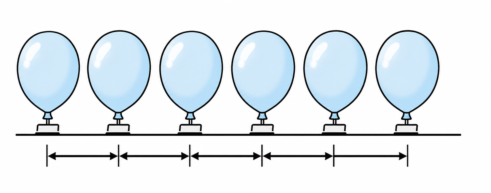
風船から空気が吹き出し、わずかに浮いています。摩擦がない状態で風船を押すと、図のように、一定の速度で動きます。このように力が働いていない状態の運動は、速度が変わらず一直線上を動く「等速直線運動」となります。（例：宇宙空間（無重力）での物体の運動）
②力が釣り合っている物体の運動
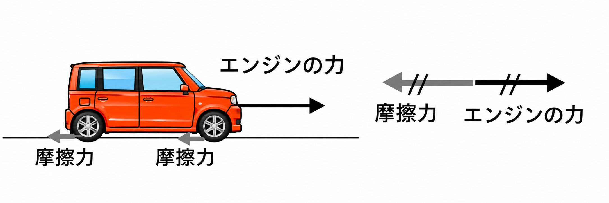
自動車が40km/hで等速直線運動しているとき、エンジンを止めれば止まります。等速直線運動をしているときは、エンジンの力とタイヤの摩擦力がつり合っています。力がはたらいていても、力がつり合っている物体の運動は「等速直線運動」となります。
力が働いていない物体、または力が①いる物体は、速さが変わらず一直線上を動く「②」運動を続ける。
自動車が一定の速さで走っているとき（等速直線運動）、エンジンの力と摩擦力の関係として正しいものはどれか。
宇宙空間（無重力・摩擦なし）で一定の速さで飛び続けているロケットの運動を何というか。
図1は等速直線運動をしている物体（速さ1.0m/s）の時間と速さの関係を示したグラフである。図1をもとに、時間と距離の関係を示したグラフを書こう。
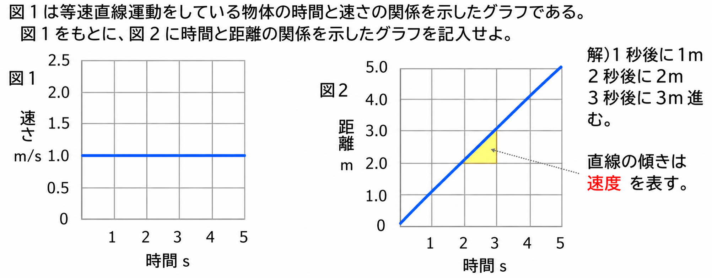
1秒後に1m、2秒後に2m、3秒後に3m進むので、時間と距離の関係のグラフは原点を通る右上がりの直線になります。
等速直線運動をしている物体の、時間と速さのグラフは①な直線になる。このとき、時間と距離のグラフは、原点を通る②な直線になる。
図1のように、速さ2.0m/sで等速直線運動をしている物体がある。3秒後までに進んだ距離は何mか。
時間と速さのグラフの直線の傾きは、何を表しているか。
①速度が増す運動
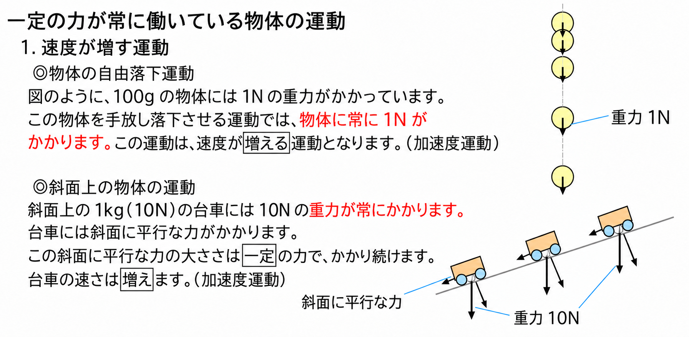
（物体の自由落下運動）図のように、100gの物体には1Nの重力がかかっています。この物体を手放し落下させる運動では、物体に常に1Nがかかります。この場合、速度が増える運動（加速度運動）となります。
（斜面上の物体の運動）斜面上の1kg（10N）の台車には、10Nの重力が常にかかります。台車には斜面に平行な力がかかり、この力の大きさは一定の力でかかり続けます。台車の速さは増えます（加速度運動）。
②速度が減少する運動
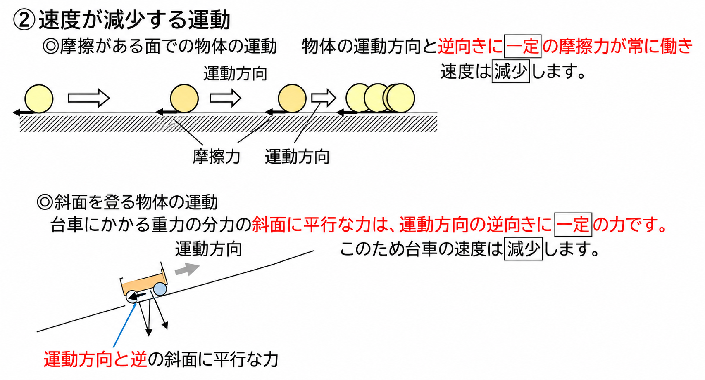
（摩擦がある面での物体の運動）物体の運動方向と逆向きに、一定の摩擦力が常に働き、速度は減少します。
（斜面を登る物体の運動）台車にかかる重力の分力のひとつ、斜面に平行な力は、運動方向の逆向きに一定の力ではたらきます。このため台車の速度は減少します。
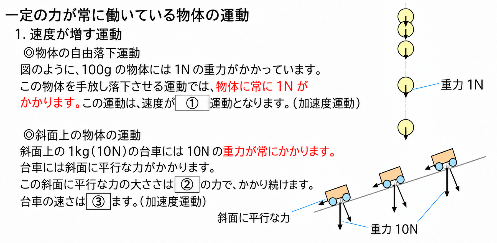
100gの物体には1Nの重力が常にかかり、この運動は速度が①運動となる。斜面上の台車には、斜面に平行な力が②の力でかかり続け、台車の速さは③ます。
100gの物体（1Nの重力がかかる）を手放し、自由落下させた。この運動について正しいものはどれか。
床の上を滑っている物体には、運動方向と逆向きに一定の摩擦力がはたらき続ける。このとき物体の速さはどうなるか。
台車が斜面をのぼっているとき、台車にかかる重力の斜面に平行な分力の向きと、台車の速さの変化として正しいものはどれか。
斜面上に置いた台車から手を離した。その後の台車の時間と速さの関係は図1のグラフのようになった。このグラフをもとに、時間と距離の関係を表すグラフを書こう。
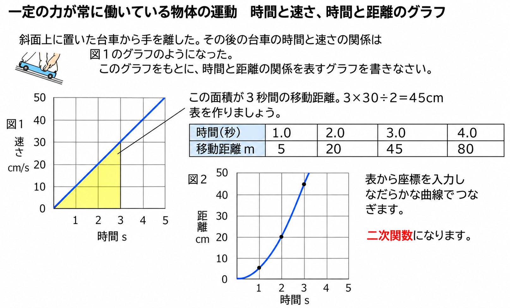
この面積が3秒間の移動距離。3×30÷2＝45cm。表を作り、座標を入力してなだらかな曲線でつなぐと、時間と距離の関係は二次関数になります。
斜面上に置いた台車から手を離した（斜面と水平な面の摩擦は考えない）。
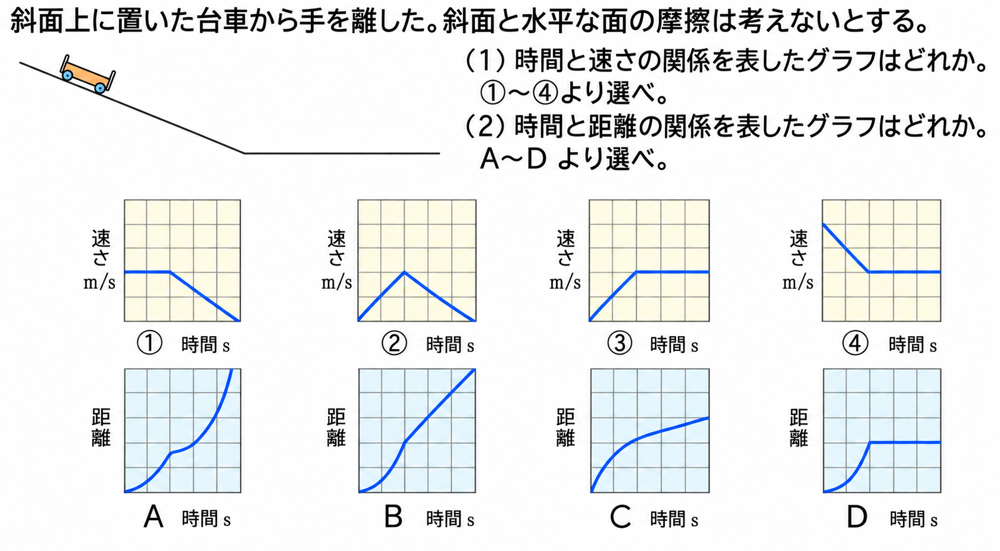
(1) 時間と速さの関係を表したグラフは③（斜面上で速さが増え、水平面に出てからは一定になる）。
(2) 時間と距離の関係を表したグラフはB（斜面上では二次関数的に、水平面では一直線に増える）。
ヒント：斜面上の台車は速度が増す運動なので時間と距離の関係は二次関数、水平面では等速直線運動になります。
斜面上に置いた台車から手を離した（斜面と水平な面の摩擦は考えない）。a（斜面上）→b（斜面と水平面の境目）→c（水平面の終わり）→d（上り斜面）の順に進む。
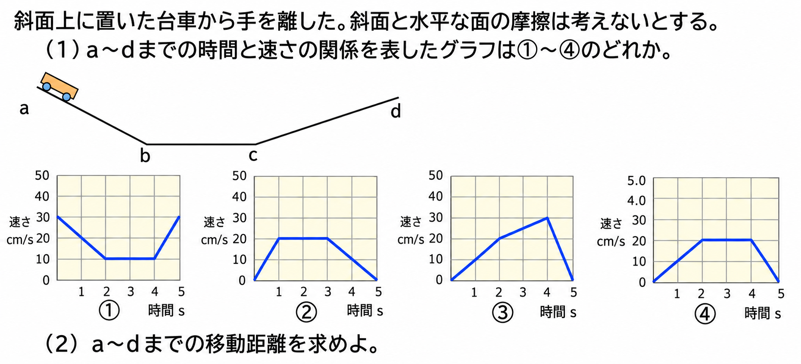
(1) a〜dまでの時間と速さの関係を表したグラフは②（下り斜面で増加→水平面で一定→上り斜面で減少）。
(2) a〜dまでの移動距離は、②の図より台形の面積を求めればよい。(2＋5)×20÷2＝70cm。
時間と速さのグラフとχ軸の間の面積は①を表す。一定の力が運動方向と同じ向きにはたらき続ける運動では、時間と距離の関係は②になる。
【例題4】の斜面上の台車で、時間と速さのグラフは原点から3秒後に30cm/秒まで一直線に増えた。3秒間の移動距離は何cmか（三角形の面積として求めよう）。
【例題5】のように、台車が斜面を下って水平面に出た。斜面上での時間と距離の関係のグラフの形として正しいものはどれか。
【例題6】のように、台車が下り斜面→水平面→上り斜面の順に進んだ。時間と速さの関係のグラフの形として正しいものはどれか。
【例題6】で、a〜dまでの時間と速さのグラフが、速さ2cm/秒から5cm/秒まで増えたあと、5cm/秒から0cm/秒まで減る台形（底辺にあたる時間の合計の目盛りの差が20）になった。a〜dまでの移動距離は何cmか（台形の面積の公式：(上底＋下底)×高さ÷2を使おう）。
次図のような斜面をもつ平面上に台車を置き、手で押さえた。手を離すと運動をはじめ、A→B→C→D間を動いた（AB間は下り斜面、BC間は水平面、CD間は上り斜面）。
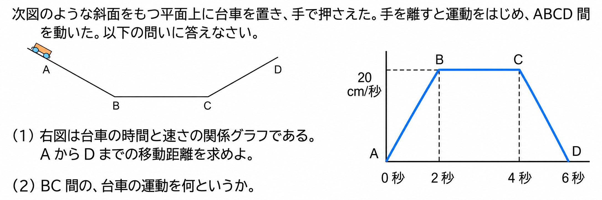
(1) 右図は台車の時間と速さの関係グラフである（0〜2秒で0から20cm/秒まで増加、2〜4秒で20cm/秒のまま一定、4〜6秒で20cm/秒から0まで減少）。AからDまでの移動距離を求めよう。
(2) BC間の、台車の運動を何というか。
下り斜面では速さが①、水平面（摩擦なし）では速さが一定の②運動になる。
【練習8】の台車（0〜2秒で0→20cm/秒、2〜4秒で20cm/秒一定、4〜6秒で20cm/秒→0）について、AからDまでの移動距離は何cmか。
【練習8】のBC間（水平面、速さが一定）の台車の運動を何というか。
図1のような装置で、止まっている力学台車から静かに手をはなし、その後の力学台車の運動を調べた。点Pから点Qまでの距離は40cmである。力学台車の質量は1kg、おもりの質量は500gである。図2は、このときの記録テープに、点aから6打点毎にb〜eの記号をつけ、点aからの長さを記入したものである（記録装置は1秒間に60打点記録する。台車と水平面との摩擦はないものとする）。
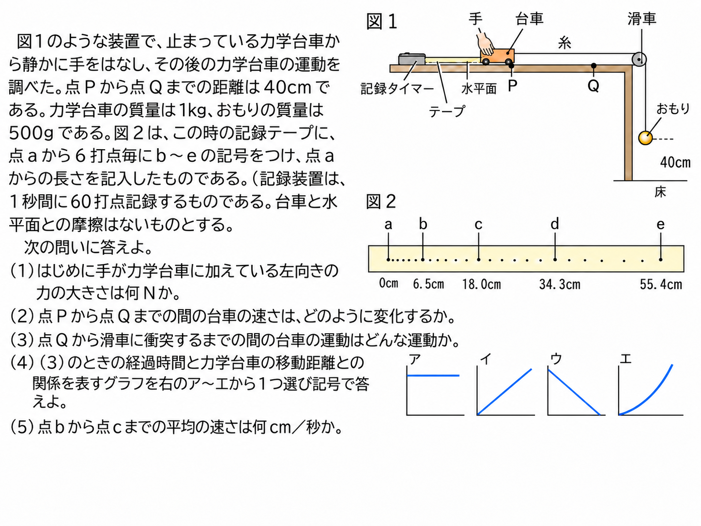
(1) はじめに手が力学台車に加えている左向きの力の大きさは何Nか。
(2) 点Pから点Qまでの間の台車の速さは、どのように変化するか。だんだん速くなる（おもりが落下している間は、糸を通じて一定の力がかかり続けるため）。
(3) 点Qからおもりが床につき、滑車に台車が衝突するまでの間の台車の運動はどんな運動か。
(4) (3)のときの、経過時間と力学台車の移動距離との関係を表すグラフは、原点を通らず、一定の速さで増え続ける直線（イ）になる。
(5) 点bから点cまでの平均の速さは何cm／秒か。
(6) 点aから点eまでの平均の速さは何cm／秒か。
【練習9】で、おもりの質量は500g（＝0.5kg）である。はじめに手が力学台車に加えている左向きの力（おもりを静止させておくための力）の大きさは何Nか。
点Qでおもりが床につき、それ以降は台車に糸から力がかからなくなった。この後、滑車に衝突するまでの台車の運動は何か。
テープで、点a(0cm)から点bまで6.5cm、点cまで18.0cm進んだ。記録タイマーは1秒間に60打点し、6打点ごとにb,cの印をつけている。点bから点cまでの平均の速さは何cm／秒か。
点a(0cm)から点eまで55.4cm進んだ。a〜eの間は6打点の区間が4つ分ある。点aから点eまでの平均の速さは何cm／秒か。
ローラースケートをはいた人が、壁を押した場合、人はどのように動くか。
(1) 湖に浮かぶボートで、B君が手でA君のボートを押すと、A君・B君それぞれのボートはどのように動くか。
(2) A君はローラースケートをはいて、壁に固定されたロープを引っ張った。このときA君の体はどのように動くか。
(1) 湖上に、A君とB君がボートに乗って、ロープをお互いにもっている。B君がロープを引っ張ると、A君・B君のボートはそれぞれどのように動くか。
(2) ロケットが飛ぶのはどうしてか説明しよう。
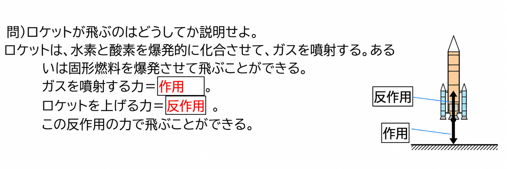
ロケットがガスを噴射する力を①、ロケットを上げる力を②という。②の力によってロケットは飛ぶことができる。
ローラースケートをはいた人が、壁を強く押した。このとき、人はどのように動くか。
湖に浮かぶ2そうのボートがあり、B君が手でA君のボートを押した。A君・B君のボートはどうなるか。
湖上でA君とB君がロープを引き合っている。B君がロープを引っ張ると、A君・B君のボートはどうなるか。
(1) 静止していた電車が急発進すると、人はそのまま静止し続けようとする慣性により、体は電車の進む向きと逆向きに傾く。
(2) 一定の速度で走っていた電車が急停車すると、人の体はそれまでの等速直線運動を続けようとする慣性により、体は電車の進む向きと同じ向きに傾く。
(1) 「だるま落とし」で、真ん中のコマをたたき出すと、だるまはそのまま元の位置に落ちる。
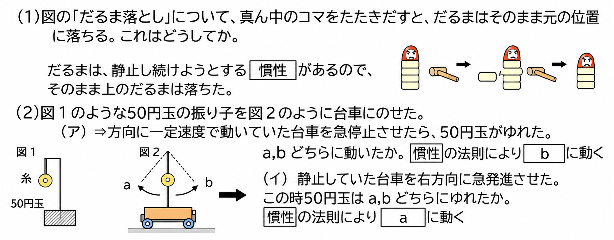
(2) 図1のような50円玉の振り子を、図2のように台車にのせた。
(3) (2)のような現象は何が原因で起きたか。→50円玉の慣性により起きた。
(4) コップの上に紙を置き、その上に10円玉を1枚のせて、紙を勢いよく指ではじくとどうなるか。
(5) 一定の速さで直進している電車とその中の人について、電車がブレーキをかけると、人の体は進行方向と同じ向きに傾く。これは、人の体が「等速直線運動」を続けようとするためである。また、電車が静止状態から急発進したときは、人の体は進行方向と逆向きに傾く。
だるまは、静止し続けようとする①があるので、真ん中のコマをたたき出しても上のだるまはそのまま落ちる。台車にのせた50円玉の振り子で、⇒方向に動いていた台車を急停止させると、50円玉は②の方向にゆれる。静止していた台車を⇒方向に急発進させると、50円玉は③の方向にゆれる。
電車のつり革につかまって立っている人がいる。静止していた電車が急発進すると、人の体はどちら向きに傾くか。
一定の速さで走っていた電車が急停車すると、つり革につかまっている人の体はどちら向きに傾くか。
コップの上に紙を置き、その上に10円玉をのせて、紙だけを勢いよく指ではじいた。10円玉はどうなるか。
ここまで学んだ「運動」の内容を使って、入試問題で確認しましょう。
900mの道のりを15分かけて歩いた。平均の速さは何m/分か。
時速72km/hを秒速に直すと何m/sか。
斜面を下る台車の運動のように、一定の力が運動方向にはたらき続けるとき、台車の時間と距離の関係のグラフはどのようになるか。
ロケットがガスを噴射して飛ぶ現象を説明するものとして正しいのはどれか。
バスが急ブレーキをかけて止まったとき、座席に座っている乗客の体が前のめりになった。これを説明する法則は何か。